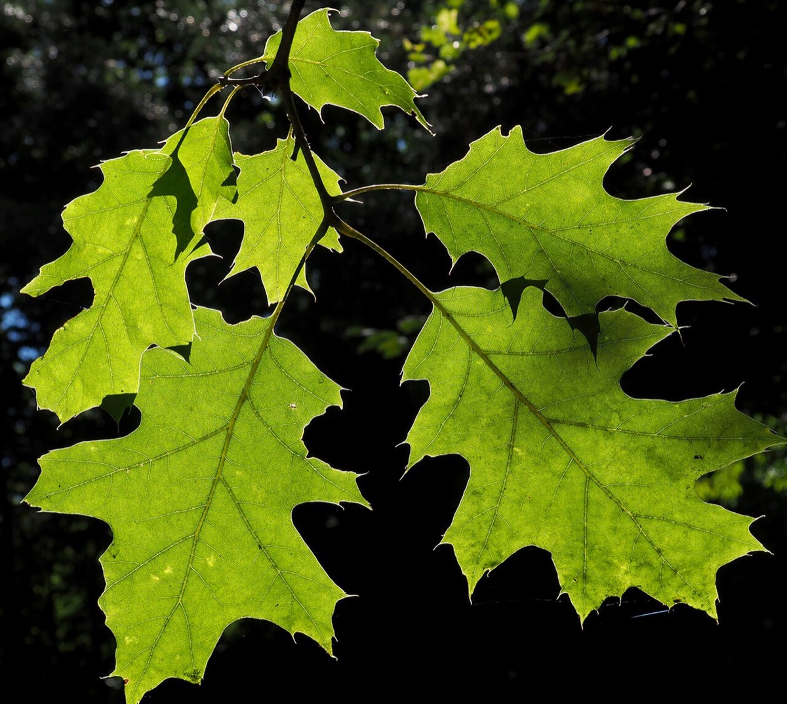
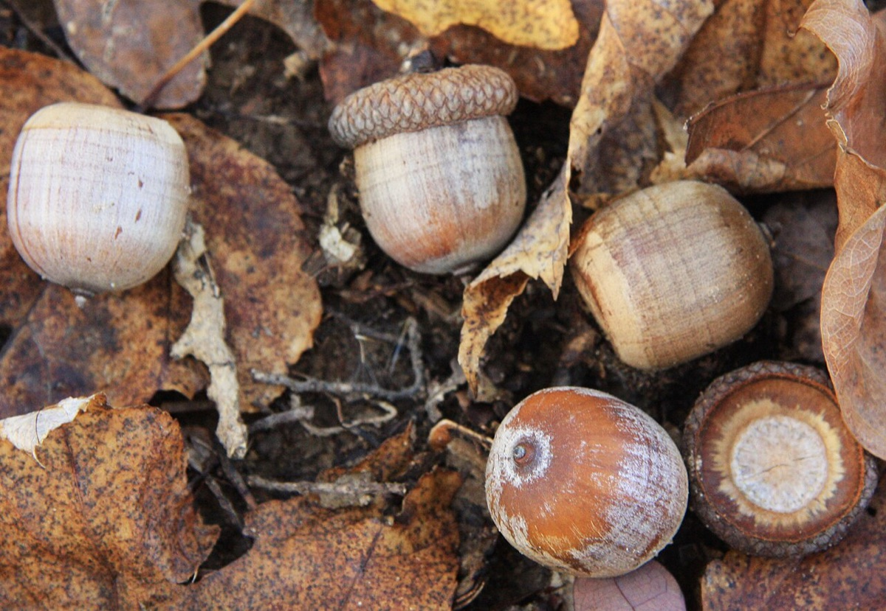

Northern Red Oak
Quercus rubra
- Also called
- Red oak
- Kind
- tree · Fagaceae
- Native to Vermont
- yes
- Legal status
- Native; no special legal status found (checked 2026-10-30)
- Look-alikes
- Black oak; Scarlet oak; Cherrybark oak; Shumard oak
Pictures


Names
Northern red oak, Quercus rubra.
Range and habitat
Native. A medium to large tree up to 90 feet; open-grown it has a short trunk and a round crown, while trees grown with competition are straight with a long clear bole. In Vermont oak is more common in the river valleys than in the uplands (Landowner's Guide).
How to identify (by season; look-alikes and the key difference)
- Leaves: alternate, simple, 5 to 8 inches, oblong with 7 to 11 lobes that each end in a bristle tip; the notches reach one-third to one-half of the way to the midrib; dull green to blue-green above.
- Bark: smooth when young; older bark has wide, flat-topped ridges with shallow furrows, a pattern like ski tracks.
- Look-alikes: other red oaks; the seedling guide singles out black oak (hybridizes with red oak).
By growth stage (trees: seedling, sapling, pole-size, mature or old; what to look at in each)
| Stage | What to look at | What you see |
|---|---|---|
| Small seedling | lobe tips, buds | Minute, shallow lobes with pointed tips (white oaks have rounded tips); alternate leaves that can look almost whorled; a whorl of several buds at the twig tip. |
| Larger seedling | lobes, buds | Prominent lobes with pointed tips; spirally arranged buds. Northern red oak buds are conical, red-brown and mostly hairless; black oak buds are angular, fuzzy and buff. |
| Sapling and pole-size | bark, twig | Smooth bark on young stems; stout red-brown hairless twigs. |
| Mature and old trees | bark, crown | Wide flat-topped ridges; rounded crown if open-grown. |
| Winter, any age | twig, bud | Clustered, large, conical terminal buds with mostly hairless red-brown scales (the tips may have a frosty fuzz). |
| Fruit (late summer to fall) | acorns | Mature over two growing seasons. |
Black oak and northern red oak hybridize and can be nearly impossible to tell apart when young.
Through the year
Dates are typical for Vermont and shift with elevation and year; "approximate" means the source gave a season and the dates are a translation of it.
| When | What | Look for | What to do | Dates |
|---|---|---|---|---|
| Apr 25 to May 31 | flower (identify) | Yellow-green catkins 2 to 4 inches long hang from the twigs as the leaves open; female flowers sit on short spikes. | - | approximate |
| Sep 1 to Oct 31 | mast (identify) | Acorns 3/4 to 1 inch, nearly round, with a flat, thick cap covering a quarter or less of the nut. They ripen late summer to fall after two growing seasons and feed bear, deer, turkey and grouse. | - | approximate |
| Nov 1 to Mar 31 | dormant (identify) | Stout red-brown hairless twigs with clustered large, conical terminal buds; older bark in wide flat-topped ridges with shallow furrows. | - | approximate |
Signs on the land (tracks, scat, browse, nests, holes, calls)
Under oaks that bears feed in, leaves may be windrowed into piles; claw marks are not easy to see on oak (Black Bear).
Role in the forest (what it eats, what eats it, what it needs)
Acorns are hard mast for bear, deer, turkey and grouse (Black Bear, White-tailed Deer, Wild Turkey, Ruffed Grouse). The Landowner's Guide says beech and oak begin bearing nuts at about age 50 and bear every 3 to 5 years for up to 150 years, and that releasing oak crowns can raise acorn production. Where deer are overabundant, red oak regeneration may fail.
Managing for it (habitat practices) and living with it (conflicts and damage)
Not recorded here; the plan and forester decide. Do not clear a high-value oak stand for grouse habitat (Ruffed Grouse).
Legal status
No special status found.
Sources
- Virginia Tech Dendrology, Northern red oak: https://dendro.cnre.vt.edu/dendrology/syllabus/factsheet.cfm?ID=38 (read 2026-10-30)
- J. Robertson and J. Truong, A Guide to the Seedlings of New England (FEMC, 2021): https://www.uvm.edu/femc/attachments/project/999/seedling_guide-compressed_1.pdf
What this page is based on
Kind of source: mixed (Virginia Tech factsheet; New England seedling guide; the Vermont Landowner's Guide for mast)
What was read: Virginia Tech Dendrology factsheet (ID 38) for northern red oak, read through a summarizing fetch on 2026-10-30, and the red oak pages of A Guide to the Seedlings of New England (read as text). The factsheet gives no habitat; the 'red oak' alternate name is not in the sources read. Calendar windows translate 'spring', 'late summer and fall' and 'winter'. A search summary of the landowner sheet (moist deep soils; strong stump sprouter; intermediate shade tolerance) was not read on the page.
Last checked: 2026-10-30
Vermont land and forest reference, built 2026-10-31. Rules and dates here are summaries, not legal advice; dates shift with elevation and year. Photo credits · Note: _reference/US-VT/Species/Northern Red Oak.md